Ten-year saving, PV tax and METRs
Worked example PDF | Markdown | Main numeric table | Tax timeline
All values are hypothetical. The four assets share a pre-tax total return; differences arise from tax bases, timing and treatment of the initial labour resource. Full-rate CGT is realised at sale in the main comparison; a strict accrual benchmark is supplied separately.
T01 Present value of all tax paid
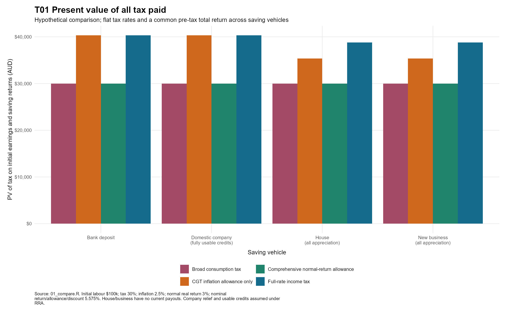
Initial labour $100k; tax 30%; inflation 2.5%; normal real return 3%; nominal return/allowance/discount 5.575%. House/business have no current payouts. Company relief and usable credits assumed under RRA.
PNG | SVG | CSV
T02 Tax after date zero, separate from initial labour tax
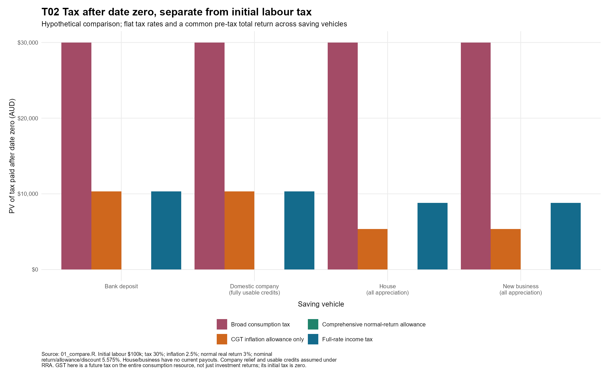
Initial labour $100k; tax 30%; inflation 2.5%; normal real return 3%; nominal return/allowance/discount 5.575%. House/business have no current payouts. Company relief and usable credits assumed under RRA. GST here is a future tax on the entire consumption resource, not just investment returns; its initial tax is zero.
PNG | SVG | CSV
T03 Final consumption in starting-year purchasing power
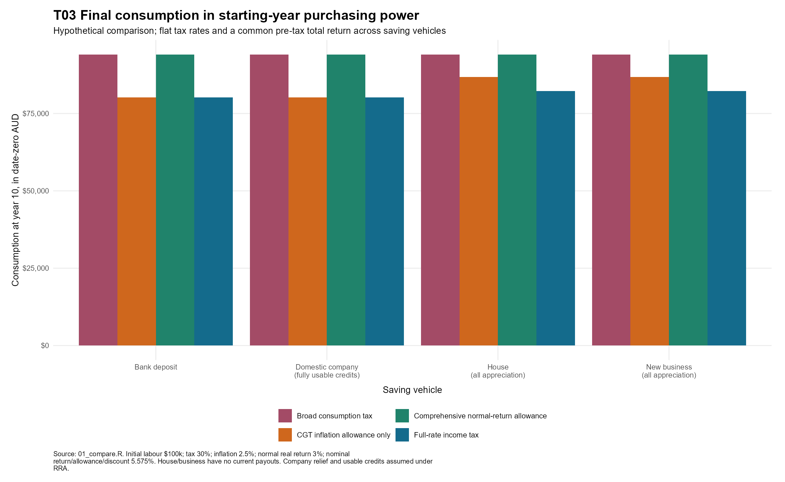
Initial labour $100k; tax 30%; inflation 2.5%; normal real return 3%; nominal return/allowance/discount 5.575%. House/business have no current payouts. Company relief and usable credits assumed under RRA.
PNG | SVG | CSV
T04 When is tax actually paid?
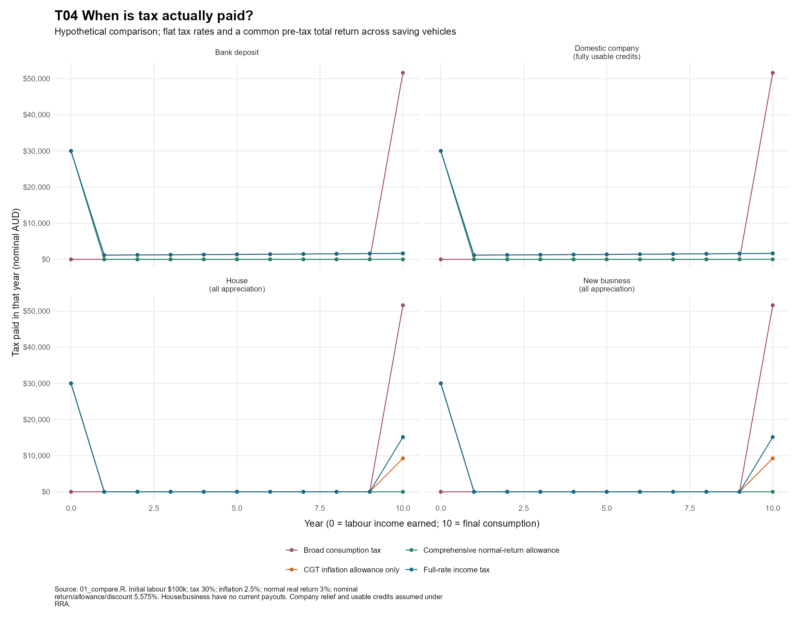
Initial labour $100k; tax 30%; inflation 2.5%; normal real return 3%; nominal return/allowance/discount 5.575%. House/business have no current payouts. Company relief and usable credits assumed under RRA.
PNG | SVG | CSV
T05 Required-return METRs
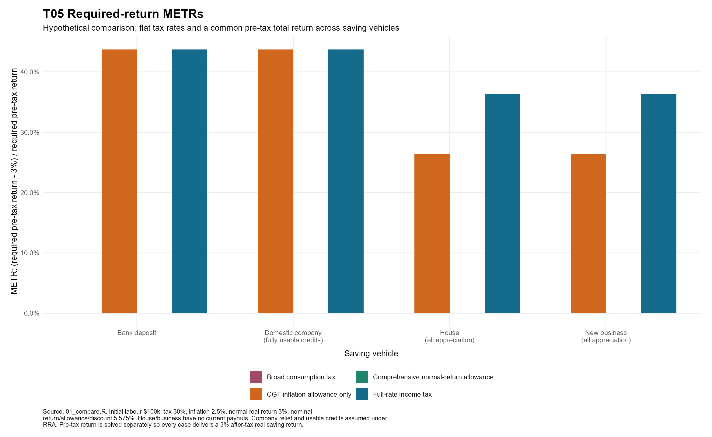
Initial labour $100k; tax 30%; inflation 2.5%; normal real return 3%; nominal return/allowance/discount 5.575%. House/business have no current payouts. Company relief and usable credits assumed under RRA. Pre-tax return is solved separately so every case delivers a 3% after-tax real saving return.
PNG | SVG | CSV
T06 Specified-return wedges are not the same as METRs
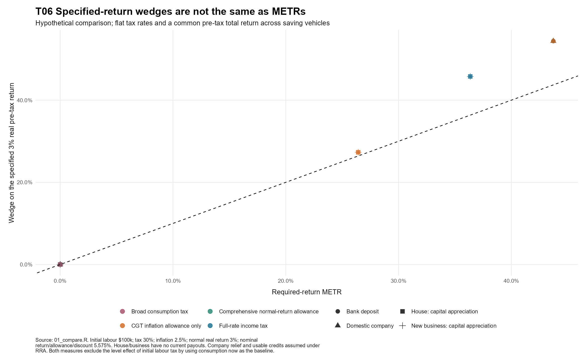
Initial labour $100k; tax 30%; inflation 2.5%; normal real return 3%; nominal return/allowance/discount 5.575%. House/business have no current payouts. Company relief and usable credits assumed under RRA. Both measures exclude the level effect of initial labour tax by using consumption now as the baseline.
PNG | SVG | CSV
T07 Holding period changes realisation-based METRs
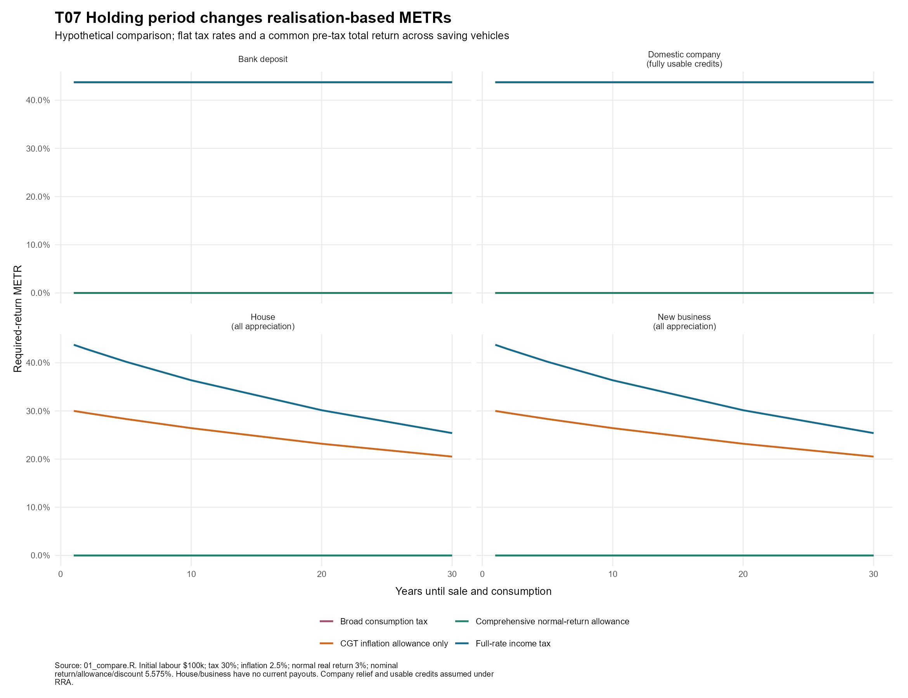
Initial labour $100k; tax 30%; inflation 2.5%; normal real return 3%; nominal return/allowance/discount 5.575%. House/business have no current payouts. Company relief and usable credits assumed under RRA.
PNG | SVG | CSV
T08 Different investment scales confound above-normal PV comparisons
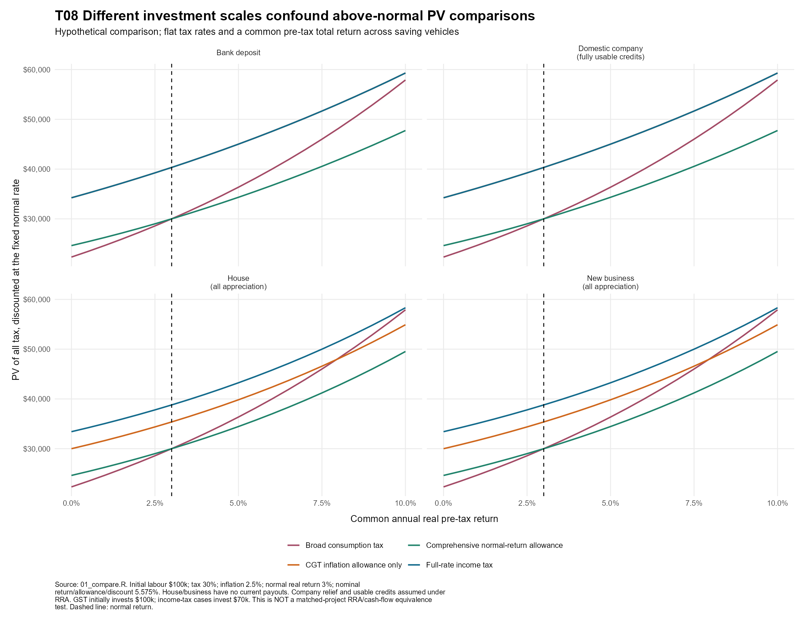
Initial labour $100k; tax 30%; inflation 2.5%; normal real return 3%; nominal return/allowance/discount 5.575%. House/business have no current payouts. Company relief and usable credits assumed under RRA. GST initially invests $100k; income-tax cases invest $70k. This is NOT a matched-project RRA/cash-flow equivalence test. Dashed line: normal return.
PNG | SVG | CSV
T09 Current income versus capital appreciation affects the comparison
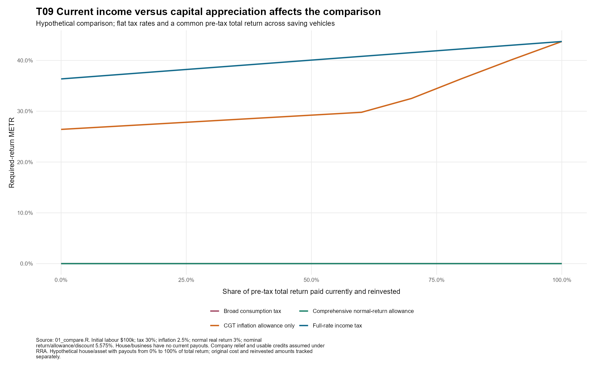
Initial labour $100k; tax 30%; inflation 2.5%; normal real return 3%; nominal return/allowance/discount 5.575%. House/business have no current payouts. Company relief and usable credits assumed under RRA. Hypothetical house/asset with payouts from 0% to 100% of total return; original cost and reinvested amounts tracked separately.
PNG | SVG | CSV
T10 An allowance at shareholder level alone can leave a company-tax wedge
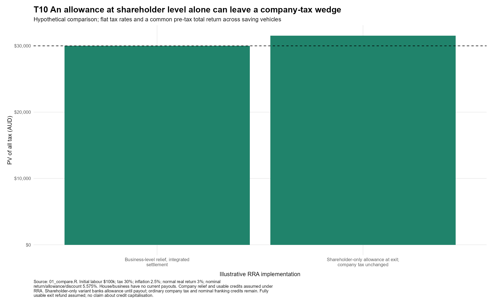
Initial labour $100k; tax 30%; inflation 2.5%; normal real return 3%; nominal return/allowance/discount 5.575%. House/business have no current payouts. Company relief and usable credits assumed under RRA. Shareholder-only variant banks allowance until payout; ordinary company tax and nominal franking credits remain. Fully usable exit refund assumed; no claim about credit capitalisation.
PNG | SVG | CSV
T11 Labour embodied in a zero-basis asset: a different starting tax treatment
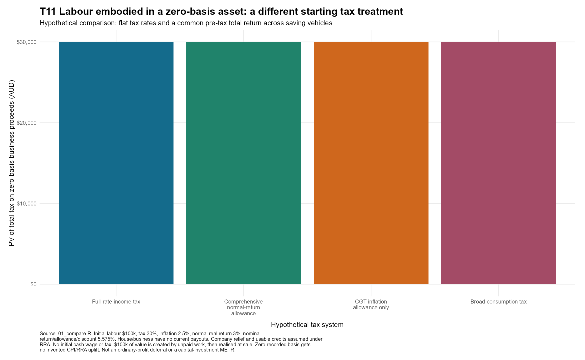
Initial labour $100k; tax 30%; inflation 2.5%; normal real return 3%; nominal return/allowance/discount 5.575%. House/business have no current payouts. Company relief and usable credits assumed under RRA. No initial cash wage or tax: $100k of value is created by unpaid work, then realised at sale. Zero recorded basis gets no invented CPI/RRA uplift. Not an ordinary-profit deferral or a capital-investment METR.
PNG | SVG | CSV
T12 Alternative: earn $10,000 at the start of each of ten years
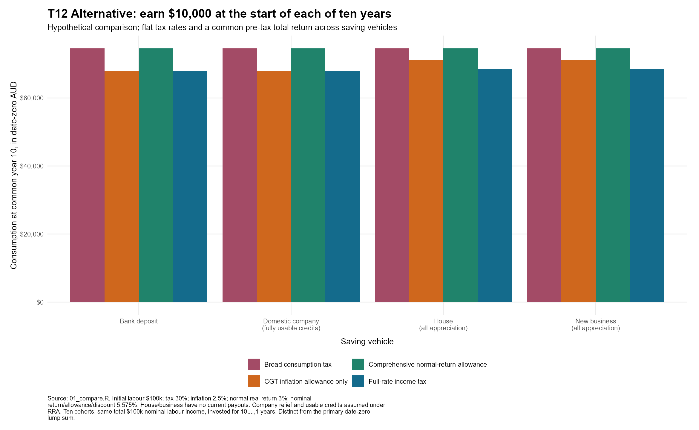
Initial labour $100k; tax 30%; inflation 2.5%; normal real return 3%; nominal return/allowance/discount 5.575%. House/business have no current payouts. Company relief and usable credits assumed under RRA. Ten cohorts: same total $100k nominal labour income, invested for 10,...,1 years. Distinct from the primary date-zero lump sum.
PNG | SVG | CSV